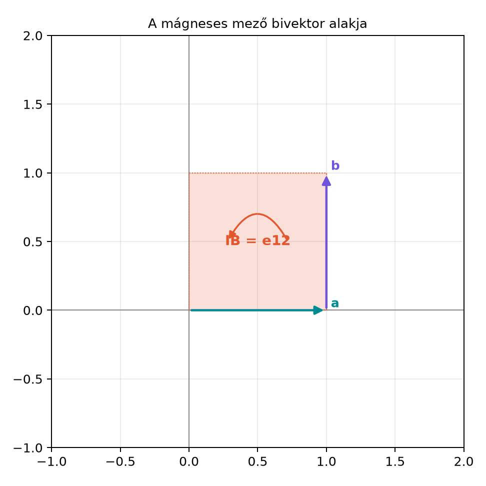

18.2 Az elektromágneses tér
multivektora F = E + IcB
18.2.1 Motiváció: miért egyetlen
multivektor az elektromágneses tér?
Az elektromosságtanban az elektromos és a mágneses teret
hagyományosan két külön vektormezőként,
-ként
és
-ként
írjuk le. Ennek a kettéválasztásnak történeti okai vannak: a sztatikus
elektromosság és a mágnesség sokáig különállónak tűnt. Amikor azonban
megjelenik a mozgó töltés, a kettő összefonódik: a Lorentz-erő
mindkettőt egyszerre tartalmazza, és a Maxwell-egyenletek azt
mutatják, hogy az időben változó elektromos tér mágneses teret kelt, és
fordítva. A geometriai algebra lehetővé teszi, hogy ezt a két
mennyiséget egyetlen, vegyes fokszámú objektumba foglaljuk, amelyből
mindkét tér visszanyerhető, és amely a Maxwell-egyenleteket rendkívül
tömör alakra hozza.
A Miért jobb a bivektor? alfejezetben már
láttuk, hogy a mágneses mező természetes módon bivektor: a vektoriális
szorzat axiális vektorként viselkedik, ami azt jelenti, hogy tükrözéskor
a mágneses mező nem közönséges vektorként transzformálódik. Most ezt a
bivektort természetes mennyiségként fogjuk beépíteni az elektromágneses
tér leírásába.
18.2.2 Szemléletes kép: a mágneses
mező mint sík
Tekintsünk egy
nagyságú,
irányú mágneses mezőt. A geometriai algebrában a mágneses tér bivektor
része
,
vagyis az
sík. A Lorentz-erőben a mágneses rész éppen ebben a síkban forgatja a
sebességet: ha a sebesség
,
akkor az erő
,
ami szintén az
síkban fekszik. A mágneses tér tehát nem egy irányt, hanem egy orientált
síkot jelöl ki: azt a síkot, amelyben a mozgó töltés eltérül.

A mágneses mező bivektor alakja - Ha B =
e₃, akkor a bivektor rész IB = e₁₂, vagyis az (e₁,e₂) sík. A Lorentz-erő
ebben a síkban forgatja a sebességet.
Az ábrán az irányított síkdarab jelöli az
bivektort. A harmadik dimenzióban a
vektor merőleges erre a síkra; a bivektor és a vektor között a
pszeudoszkalárral való szorzás teremt kapcsolatot.
18.2.3 Definíció: az
elektromágneses tér multivektora
Definíció. Legyen
az elektromos térerősség vektora (SI-mértékegysége
),
a mágneses indukció vektora (SI-mértékegysége tesla,
),
a vákuumbeli fénysebesség,
pedig a G(3) pszeudoszkalár. Az elektromágneses tér multivektora
(Faraday-bivektor)
Az
egy vegyes fokszámú multivektor: az első tag vektor, a második tag
bivektor, mert
trivektor,
vektor, így szorzatuk fokszáma
.
A bivektor rész
mértékegysége
,
tehát pontosan megegyezik az elektromos rész mértékegységével. Ez a
-szorzó
szerepe: az SI-egységekben a két rész csak így adható össze.
A bivektoros mágneses teret gyakran külön is jelöljük:
.
Ekkor
.
A továbbiakban ezt a jelölést használjuk, amikor a bivektor jellegét
hangsúlyozzuk.
Vegyünk egy olyan elrendezést, ahol a számolás könnyen követhető, és
használjunk
természetes egységeket, azaz a
-szorzót
a számolás közben nem írjuk ki, de a definícióban megtartjuk. Legyen
A hagyományos Lorentz-erő:
Mivel
,
azt kapjuk, hogy
Most számoljuk ki ugyanezt geometriai algebrával. Először írjuk fel
az
multivektort
esetén:
A
szorzótáblája szerint
,
tehát
A Lorentz-erő geometriai algebrai alakját hamarosan be fogjuk
bizonyítani;
esetén ez a következő:
Számoljuk ki a belső szorzatot. A
kifejezésben
és
.
A vektor–bivektor belső szorzat definíciója szerint
Elvégezzük a geometriai szorzatokat:
Így
Ezért
A Lorentz-erő:
ami pontosan megegyezik a hagyományos vektoriális szorzatból kapott
eredménnyel.
18.2.5 A Lorentz-erő geometriai
algebrai alakja
Tétel. A hagyományos Lorentz-erő
kifejezése a geometriai algebrában
Bizonyítás. Először a belső szorzat és a vektoriális
szorzat kapcsolatát mutatjuk meg. A vektor–bivektor belső szorzat
definícióját használjuk:
A vektoriális szorzat definíciója a könyv konvenciója szerint
,
tehát
Ebből
Mivel az
-ben
szereplő bivektor
,
azt kapjuk, hogy
ezért
A Lorentz-erő hagyományos alakjába behelyettesítve:
Ezzel az állítást beláttuk. ∎
Az eredmény jól mutatja, hogy a mágneses tér bivektor alakja a
természetesebb: a Lorentz-erőben a mágneses rész nem egy vektorral való
vektoriális szorzat, hanem egy bivektorral való belső szorzat. A mínusz
előjel a konvenciókból adódik, és a fenti levezetésben minden lépést
követtünk.
18.2.6 Az energiasűrűség és a
Poynting-vektor
Az elektromágneses tér energiáját és energiaáramát a hagyományos
formalizmusban két külön mennyiség írja le. Vákuumban az elektromágneses
energiasűrűség
ahol
a vákuum permittivitása,
a vákuum permeabilitása. A Poynting-vektor pedig
A geometriai algebrában mindkettő egyetlen multivektorból, az
kifejezésből nyerhető.
Tétel. Az
multivektorra
azaz
A skalárrész az energiasűrűséggel, a vektorrész a Poynting-vektorral
arányos.
Bizonyítás. Először számítsuk ki a reverziót. A
vektor reverziója önmaga, a bivektor reverziója pedig a negáltja: ha
,
akkor
.
Ugyanis
mert
és
,
továbbá
,
hiszen
minden vektorral felcserélhető. Így
Most szorozzuk össze:
Jelöljük a bivektort
-vel,
hogy a számolás áttekinthető legyen:
A középső két tag a belső szorzat definíciója alapján
mert
.
A bivektor négyzete:
Tehát
Már láttuk, hogy
,
ezért
Ezt behelyettesítve:
Mindkét oldal felét véve:
Használjuk fel a vákuumra érvényes
összefüggést. Az első tag:
A második tag a Poynting-vektorral kifejezve:
Így
Ezzel a tételt igazoltuk. ∎
A gyakorlatban az
energiasűrűséget és a
Poynting-vektort tehát így nyerjük vissza:
A fokszám-projekció jelölése jól mutatja, hogy a skalárrész az
energiát, a vektorrész pedig az energiaáramot hordozza.
18.2.7 Jelölési konvenciók
forrásonként
A geometriai algebra elektromágnességi tárgyalásában a források
jelölése kissé eltér. Sok geometriai algebrai szerző természetes
egységekben dolgozik, ahol
,
és ekkor az
alak jelenik meg, ahol
a mágneses vektor,
pedig a megfelelő bivektor. Hestenes és más szerzők gyakran
alakot írnak, ahol
a pszeudoszkalár,
pedig egy bivektor, nem vektor. Emiatt az
kifejezésben a
jelölés nem ugyanazt a fizikai mennyiséget jelöli, mint a mi
könyvünkben. A jelen könyv a definícióban szereplő
konvenciót követi, mert így SI-mértékegységekben is követhető marad, és
a
-szorzó
jelzi a mértékegység-átváltást. A pontos forráshasználat ellenőrzését a
fejezet végén jelezzük.
18.2.8 Tipikus hibák és
félreértések
Az
nem vektor. Az
multivektor egy vektor és egy bivektor összege. A hagyományos vektorokra
érvényes
felbontást nem lehet közvetlenül
-re
alkalmazni.
A Lorentz-erőben a mínusz előjel lemarad. A
geometriai algebrai alak
.
A mínusz abból adódik, hogy
,
ezért a hagyományos vektoriális szorzatos alakkal való egyezéshez a
mínuszt meg kell tartani.
A mágneses bivektor és a mágneses vektor
összekeverése. A
vektor és az
bivektor ugyanazt a fizikai mezőt írja le, de különböző fokszámú
objektumok:
vektor,
bivektor. A Lorentz-erőben a belső szorzatot bivektorral kell venni, nem
vektorral.
A
-szorzó
elhagyása SI-mértékegységekben. Ha nem
egységekben dolgozunk, az
-ben
szereplő
mértékegysége csak így lesz
,
ami az elektromos rész mértékegységével megegyezik.
18.2.9 Feladatok
18.2.9.1 (a) Fogalmi kérdés
Magyarázd el, miért természetes a mágneses teret bivektorként kezelni
a geometriai algebrában, nem pedig axiális vektorként.
18.2.9.2 (b) Kézi számolás
Legyen
,
,
és használj
egységeket. Írd fel az
multivektort, számítsd ki
-et,
és olvasd le belőle az energiasűrűséggel és a Poynting-vektorral arányos
részeket.
18.2.9.3 (c) Levezetési
feladat
A vektor–bivektor belső szorzat definíciójából kiindulva bizonyítsd
be, hogy
.
18.2.9.4 (d) Előkészítő feladat a
Maxwell-egyenletekhez
Az
multivektorra írd fel a
geometriai szorzat fokszám-szerkezetét. Milyen fokszámú tagok jelennek
meg, és melyik hagyományos operációnak felelnek meg? Ez a feladat
készíti elő a A Maxwell-egyenletek egyetlen
egyenletben alfejezetben szereplő
kifejezés értelmezését.
18.2.10 Megoldások
18.2.10.1 (a) Fogalmi kérdés
A mágneses tér azért bivektor a geometriai algebrában, mert a
Lorentz-erőben a mágneses rész a sebességgel való vektoriális szorzat
révén hat:
.
A vektoriális szorzat geometriai algebrában belső szorzat egy
bivektorral:
.
A bivektor megadja azt a síkot, amelyben a töltés eltérül, és
tükrözéskor a helyes transzformációs szabályt adja. A vektoriális
szorzat csak három dimenzióban létezik, míg a bivektor
dimenziófüggetlen, ezért a bivektoros leírás általánosabb.
18.2.10.2 (b) Kézi számolás
Adott
,
,
.
Ekkor
A reverzió:
A szorzat:
Kiszámoljuk a részeket:
Tehát
A fele:
A skalárrész
,
ami a
értéknek felel meg, tehát az energiasűrűséggel arányos. A vektorrész
,
ami a
kifejezésnek felel meg, tehát a Poynting-vektorral arányos.
18.2.10.3 (c) Levezetési
feladat
A belső szorzat definíciója szerint
Mivel
minden vektorral felcserélhető,
,
így
A vektoriális szorzat definíciója szerint
,
ezért
18.2.10.4 (d) Előkészítő
feladat
Az
multivektort a
vektorderiváltal megszorozva:
Az első tag
egy vektor és egy vektor geometriai szorzata, ami skalár + bivektor:
A második tag
egy vektor és egy bivektor geometriai szorzata, ami vektor +
trivektor:
Így
fokszám-szerkezete:
skalár rész:
— az elektromos tér forrásossága;
bivektor rész:
— az elektromos tér cirkulációja;
vektor rész:
— a mágneses bivektor forrásossága;
trivektor rész:
— a mágneses tér cirkulációja.
Ez a négy fokszám pontosan a Maxwell-egyenletek négy tagjának felel
meg, ezért a
kifejezés a következő alfejezet központi eleme lesz.
18.2.11 Rövid összefoglaló
Az elektromágneses teret a geometriai algebrában az
multivektor írja le, ahol
vektor,
pedig bivektor. A
-szorzó
biztosítja, hogy a két tag mértékegysége azonos legyen. A mágneses tér
bivektor alakja a Lorentz-erőben természetes módon jelenik meg:
,
mert
.
Az
kifejezésből az energiasűrűség és a Poynting-vektor egyszerre nyerhető:
.
Az itt bevezetett
multivektort használjuk a A Maxwell-egyenletek
egyetlen egyenletben alfejezetben, ahol a
egyenletben a tér forrásaival kapcsoljuk össze.
18.2.12 Források és ellenőrzési
hiányok
Ez az alfejezet a geometriai algebra elektromágnességi alkalmazásának
standard eredményeit használja. A fejezet kiindulópontjaként hivatkozott
Hestenes-előadás, Doran–Lasenby-könyv és az arXiv:1101.3619 azonos
témakört tárgyal, de az oldalszámokat, a pontos jelölési konvenciókat és
a fejezetszámokat nem ellenőriztem. A jelölési eltérések, például az
alak vagy a
bivektorként való használata, forrásonként változnak; ezt a szövegben
jeleztem.